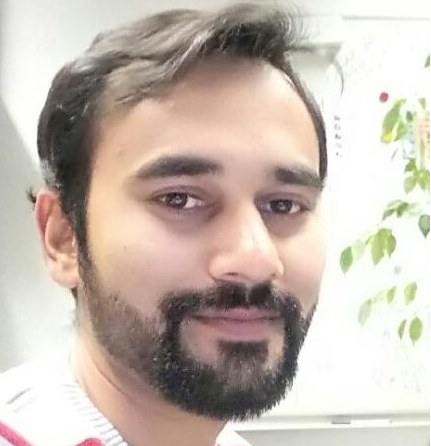

DOC. ID-00 · PROFILE / DIGITALIZATION · ENERGY · SECURITY

Daud Mustafa Minhas Ph.D.-Eng
> Digitalization & AI Engineer_
I build intelligent and secure energy systems. My work spans critical energy grids and power electronics, smart-grid optimisation, digital twins and agentic AI/LLMs, all protected by CISM®-certified OT/IT cybersecurity. I lead digital flexibility and security research at ZeMA gGmbH. I teach Agentic AI for Automation and Mathematical Mastery at Saarland University and the Scheer School of Digital Sciences.
SENSE → MODEL → OPTIMISE → SECURE → TEACH
DRAG TO ORBIT · CLICK A DEVICE FOR ITS TWIN DATA
DOC. ABT-01 · ABOUT
About me
I am a Digitalization Engineer, AI researcher and university educator with a Ph.D. in Systems Engineering. I bring 10+ years of teaching and 2+ years of industrial R&D experience.
My core foundation is critical energy grids and power electronics. I extend it with smart-grid optimisation, digital twins and agentic AI/LLMs. I protect it with CISM®-certified OT/IT cybersecurity.
I currently lead digital flexibility and security research at ZeMA gGmbH. I lecture on Agentic AI for Automation and Mathematical Mastery at Saarland University and the Scheer School of Digital Sciences.
// CONTINUOUS LEARNING
Emerging agentic AI frameworks, embedded drone systems, green energy, cyber-physical security and evidence-based learning sciences.
// SPORTS & ENDURANCE
Running, climbing, cycling, swimming, exploring new tech and cross-cultural collaboration.
DOC. RES-02 · RESEARCH ARCHITECTURE
Research: a layered stack
Energy is the foundation. Digitalization and AI make it intelligent. A trust layer makes it secure. Select a layer to explore it.
CAREER LOG · APPLIED SYSTEMS
Working experience
From commissioning PLCs and SCADA panels to leading grid-security research. Open any entry for details.
PROJECT DOSSIERS · DIGITALIZATION, AI & ENERGY GRIDS
Selected projects
FIG. 02 · CYBER-PHYSICAL TRUST LAYER
Secure industrial communication
IEC 62443 zones and conduits between a flexibility platform, a home energy management gateway and prosumer devices over Modbus-TCP. Launch an attack, run a fuzzing campaign, or switch defences off to see what happens.
ILLUSTRATIVE SIMULATION · NOT A LIVE NETWORK
PAPERS · COMPLETE PUBLICATIONS LIST
Publications
The grouping highlights peer-reviewed articles in internationally indexed and higher-visibility outlets. It does not imply that an impact factor measures the quality of an individual publication.
DOCTORAL DISSERTATION D. M. Minhas, “Component-Based Dynamic Modelling, Optimization and Distributed Control of Home Area Power Networks”, doctoral dissertation, Universität des Saarlandes.
DOC. EDU-07 · TEACHING & MENTORSHIP
Teaching
Project-based learning, live coding, Git and Python, used to turn control, optimisation and AI-agent concepts into practical engineering skills.
// MENTORSHIP
Supervised numerous Master’s and Bachelor’s theses on power load disaggregation, digital twins, appliance classification and cyber-physical network security.
// GRANTS
Key contributor and work-package lead on the €4.3M BMWE-funded SURF smart-grid flexibility proposal across academic and industrial teams.
// ERASMUS+
Led EU Erasmus+ capacity enhancement proposals (Energy4U, DigiCRAFT, ReCAP) and international researcher mobility programmes.
DOC. EDU-08 · EDUCATION & POSTGRADUATE TRAINING
Education
QUAL. 09 · SKILLS, CERTIFICATIONS & MEMBERSHIPS
Skills & credentials
Certifications
Professional memberships
- ISACA CISM®ID 242639970
- IEEE & IEEE ComSocID 93374210
- Engineers Australia · Recognized Professional Engineer, Skill Level 1ID 3878628
- Pakistan Engineering Council · Registered EngineerELECT/23735
LOG. 10 · TALKS, AWARDS & SERVICE
Talks, awards & service
// TALKS & PRESENTATIONS
// AWARDS
// ACADEMIC SERVICE & LEADERSHIP
Served on technical programme committees for IEEE international conferences. Regular expert reviewer for premier journals and conferences across IEEE, Elsevier, MDPI, ACM and IET, including IEEE Access, IET Cyber-Physical Systems, ACM TIST and MDPI Energies / Smart Cities.
11 · CONTACT / OPEN CHANNEL
Let’s build resilient, intelligent
and secure energy systems.
Open to research collaboration, consortium building, teaching and industrial OT security projects.